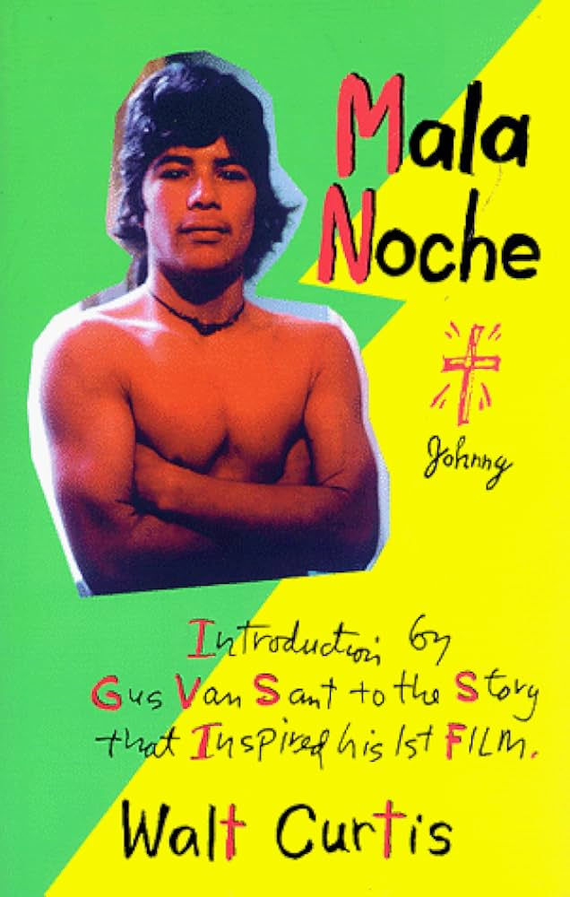

Mala Noche & Other "Illegal" Adventures, published in 1997, collects several works by Walt Curtis, an Oregon writer native to Portland. The original novella Mala Noche, published in 1977, is an autobiographical story about the author's complicated emotional and sexual relationships with several younger Mexican immigrants. Set in Portland, in particular Skid Row, the area now known as Old Town, the novella takes place over several years, chronicling the ups and downs in Curtis's relationships in a diaristic manner. The rest of the collection comprises various essays, poems, and additions to the original Mala Noche novella, resulting in a semi-complete retrospective of Walt Curtis's career, including an introduction written by famed Portland director Gus Van Sant, whose debut feature film adapted the original Mala Noche novella.
Mala Noche is not an easy read, but few figures have had an impact on Oregon's writing scene like Portland's unofficial poet laureate Walt Curtis. Born in 1941 with a literary career spanning nearly four decades, Curtis defined a style of poetry and prose writing with a lasting impact not only on the Oregon writing scene, but beyond. Possibly his most significant contribution to the arts outside of his own work is the jumpstarting of the career of one of Portland's most famous filmmakers, Gus Van Sant (Good Will Hunting, My Own Private Idaho, Milk). Mala Noche provides the inspiration for Van Sant's debut feature, and the film was immediately well-received, leading eventually to a broad reevaluation of Curtis's work.
That being said, in a modern context Mala Noche is confrontational to say the least. Focusing on the relationship between an older man (Curtis was presumably in his early thirties at the time of writing) and several younger men (their ages are rarely specified, but the range is around 16-22), the novella contains content that could be quite objectionable to current audiences. While the tone is never predatory, it is difficult to forget that this is an older man writing about how much he is in love with young, late-teenage men. Additionally difficult is the sheer number of sex scenes and the half-prosaic, half-explicit way they are written. Interspersed constantly throughout the languorous descriptions of Curtis driving, working, or sort of just wandering around are his desperate reflections on sex or his insistent entreaties to these often disinterested young men. It is rare that a sex scene seems consensual or reciprocal, especially when you are made to remember how little Curtis and the men he chases are even able to communicate. This is far from an easy text to read, but as a picture of a particular viewpoint, an idiosyncratic peek into one man's mind during a time long past, it is remarkably affecting.
A significant amount of Curtis's writing was dedicated to exploring the issues faced by minority populations in Portland at the time, especially LGBTQ people and people of color. Mala Noche often digresses into discussions of injustices faced by the young Mexican immigrants Curtis interacts with. Police brutality is commonplace and immigration sweeps are regular occurrences. Mala Noche often comments on the strange and horrible cycle so many immigrants experience: entering the country, staying and working for a time, being rounded up and deported, then finding their way back shortly to start the whole thing over again. In the midst of all of this, Walt Curtis positions himself as the regular, consistent backdrop to the mysterious wanderings of these young men. His love for them is deeply intertwined with his anger towards the xenophobic and racist forces of authority that threaten them, and even more influenced by his own self-pitying absorption with the idea of these men. His deeply idiosyncratic writing provides a unique perspective on the early anti-authoritarian ideals that form a strong part of Portland's identity as a city today. As a gay man, Curtis comments with honesty and directness on the issues facing queer people in the 70s and 80s, including retrospective writing throughout the collection about the effects of the AIDS crisis. He chronicles Portland's famous liberalism towards issues of sexuality, rarely recounting actual violence directed towards LGBTQ people. Instead, the pieces are permeated with a malaise, the constant sense that Curtis lives in a small world all his own. Out of the small grocer/liquor store he works at he is witness to countless small violences, the ravages of addiction and the indifference of the city to the poor and outcast. Small wonder Curtis was considered the foremost street poet of the area.
Curtis's prose is dreamlike, drifting loosely from day to day, sometimes skipping large chunks of time, often falling into a stream-of-consciousness approach to his writing. The 1997 collection primarily focuses on Mala Noche, but includes several essays and poetry excerpts that expand on it, especially by giving context to the location and time period. "The Street Poet" and "Hard Drugs on Sixth Street" discuss Skid Row and its occupants; "The Immigrants," "Will Mexico Have Another Revolution?" and others discuss the Mexican men and women Curtis occupies much of his writing with. Several poems are excerpted or included in full, and there are additional photographs, illustrations and pieces of handwritten text scattered throughout the book, supplementing the pieced-together, diaristic style of storytelling. Many of the photographs included are of Portland locations from the 70s and 80s, such as The Satyricon, a storied Portland club that closed in 2010. As such, the collection becomes a window into time. As a piece of Oregon literature is it incredibly significant; at the same time, it is not an easy read, enmeshed as it is in Curtis’s obsessions. Still, for those interested in the history of Portland and the literary figures that shaped its scene, this is essential reading.
Walt Curtis was born in 1941 in Olympia, Washington. Writing poetry, short stories, and autobiographical work for over 30 years, he first moved to Oregon in 1952, later studying at Portland State College, where he became immersed in the Portland literary scene. A known figure in the scene, Curtis co-founded the Oregon Cultural Heritage Commission and served as secretary until his death in 2023.
Walt Curtis, The Roses of Portland (1974)
- poetry, Portland
Marjorie Sandor, Portrait Of My Mother, Who Posed Nude in Wartime (2003)
- short stories
